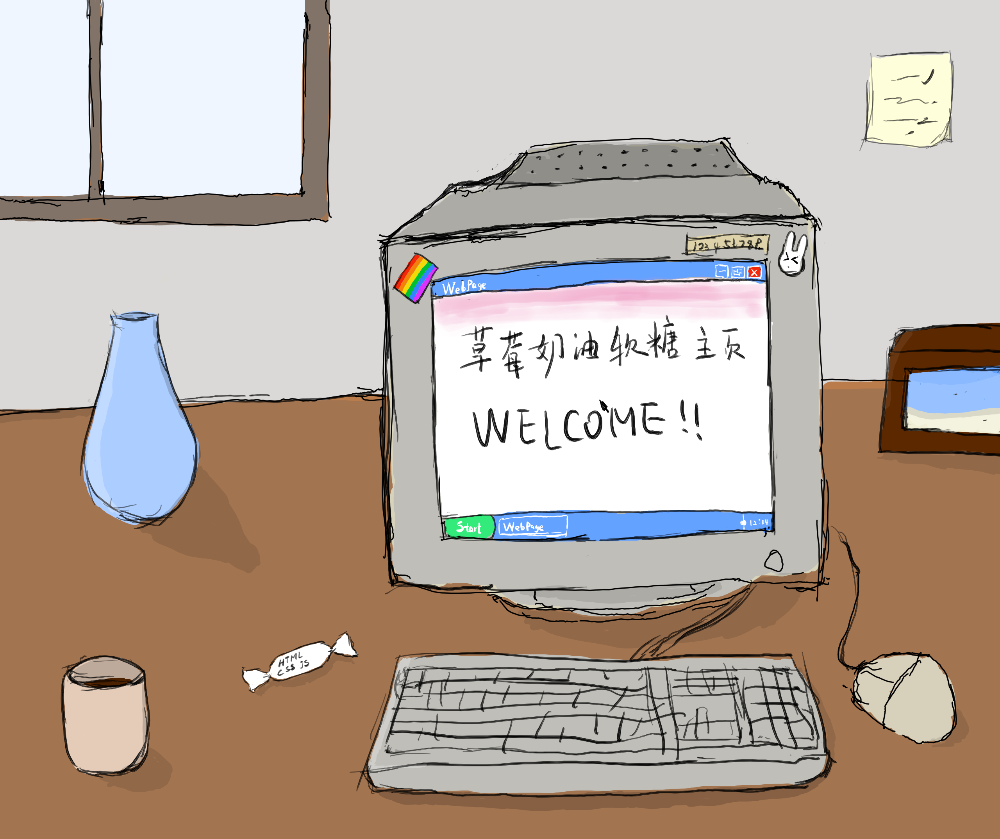

欢迎来到草莓奶油软糖主页！

这里是草莓奶油软糖主页，我用它消磨时间和发自己的瞎想，使用现学的HTML，CSS和JavaScript在Github Page上创建，你可以随便看看我写的并不会对你产生帮助的文字，了解我或者访问其他超棒的网站。
Kit0444，或者Kithium，Kit，Andr，目前是计算机学生，喜欢动画，折腾奇怪的电子产品，休闲的玩一些音乐游戏，以及无病呻吟。听动画歌，目前的主力手机是 iPhone SE 3 和 LG G8 ，主力电脑是惠普暗影精灵8Pro和运行Fedora的微软Surface Go3。